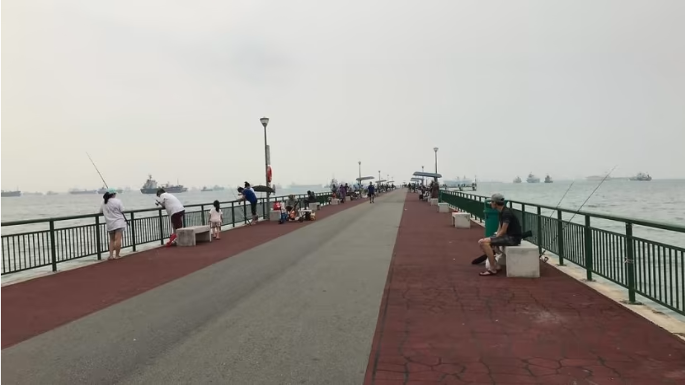
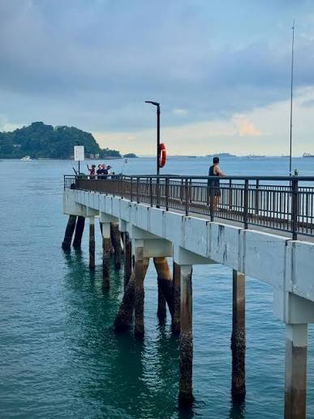

Pack Right, Learn Before You Cast
Saltwater Angling & Marine Life
Member-tested coastal locations, saltwater techniques, gear checklists, and species guides for Singapore waters.
Locations
Common Fishing Spots

Bedok Jetty
Singapore's iconic deepwater jetty every angler knows and loves. Ideal for beginner, intermediate, expert anglers.

Changi Beach & Boardwalk
A coastal stretch featuring wide wooden footbridges over shallow waters. Excellent for light tackle and night squidding.

Labrador Park Jetty
Rocky structures and deep drop-offs perfect for bottom fishing and targeting predatory fish.
Marine Species Guide
Common Marine Fish Species in Singapore
Filter saltwater species by difficulty:
| Species Name | Nickname | Habitat | Best Target Locations | Difficulty |
|---|---|---|---|---|
| Diamond Trevally | Chermin | Shallow coastal waters, sea walls | East Coast Park breakwaters | Beginner |
| Orange-Spotted Grouper | Gau Hu | Bottom structures, sea wall crevices, pylons | Labrador Park, Bedok Jetty | Beginner |
| Golden Snapper | Ang Chor | Reefs, deep sea beds, and rocky shores | Bedok Jetty, Southern Islands | Intermediate |
| Queenfish | Queenie | Open surface waters, current lines | Changi, Bedok Jetty | Intermediate |
| Barramundi (Asian Sea Bass) | Kim Bak Lor | Estuaries, mangroves, and pier pylons | Changi Beach, Woodlands Jetty | Advanced |
Techniques
Popular Types of Saltwater Fishing
Bottom Bait Fishing
Using heavy sinkers with fresh squid or live prawns anchored to the sea floor to target bottom dwellers like Snappers, Groupers, and Catfish.
Shore Jigging & Lure Casting
Casting metal jigs or hard lures from jetties into deep water to simulate fleeing baitfish, perfect for predatory fish like Trevally and Barramundi.
Night Squid Eging
Fishing during nighttime around illuminated jetty posts using specialized luminous jigs to catch fresh squid on high tides.
Video Demonstration
Overhead Casting for Coastal Waters

Demonstration clip showing proper rod positioning and overhead thump cast execution.
Before You Go
Starter Saltwater Gear Checklist
| Item | Purpose | Priority |
|---|---|---|
| Heavy-Duty Spinning Rod & Reel (7–9 ft) | Longer reach for jetty and surf casting in coastal currents | Essential |
| Braided Mainline & Fluorocarbon Leader | Abrasion resistance against sharp rocks, barnacles, and toothy fish | Essential |
| Saltwater Terminal Tackle (Sinkers, Swivels, Hooks) | Corrosion resistant hooks and heavy pyramid sinkers for strong tides | Essential |
| Metal Jigs & Squid Eging Lures | Versatile artificial lures for surface predators and night squidding | Recommended |
| Long-Handled Jetty Landing Net | Safely hoist heavy catches onto elevated jetties or sea walls | Recommended |
| Polarised Sunglasses | Reduce water glare to spot submerged structure and shallow reefs | Nice to have |
Did You Know?
Fun Facts About Marine Angling in SG
Loading Fact...
Click shuffle or refresh to view a random fact!